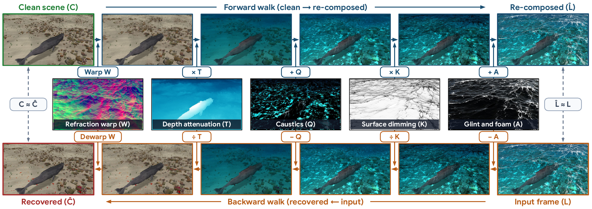
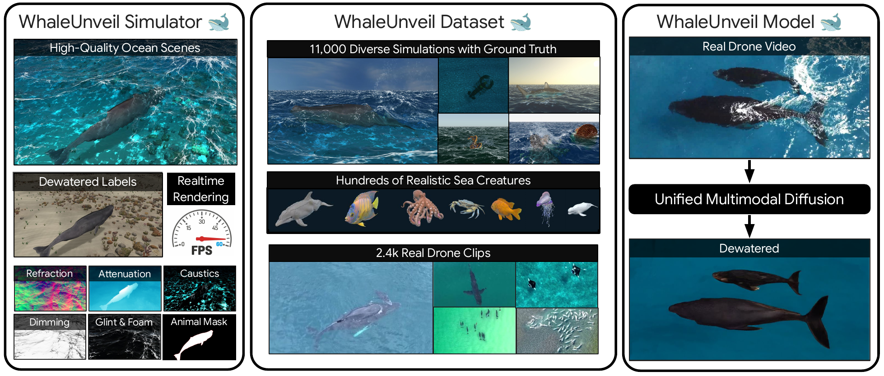
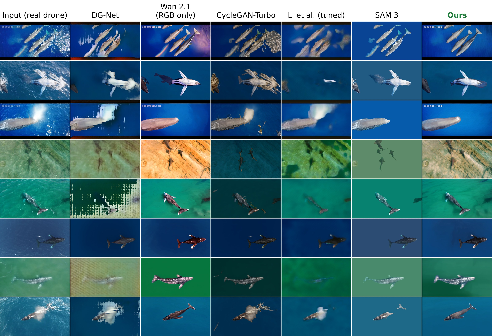
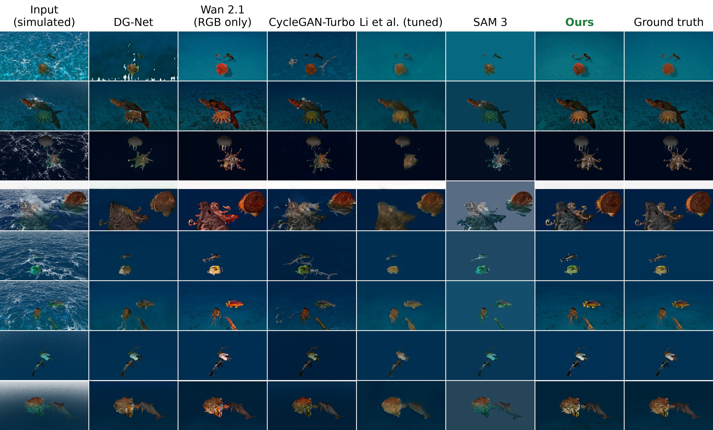
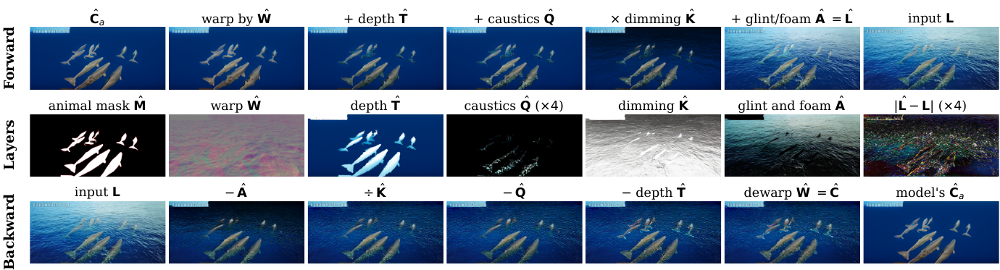
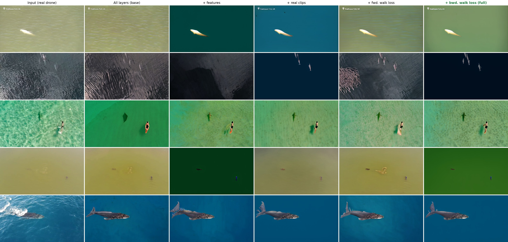
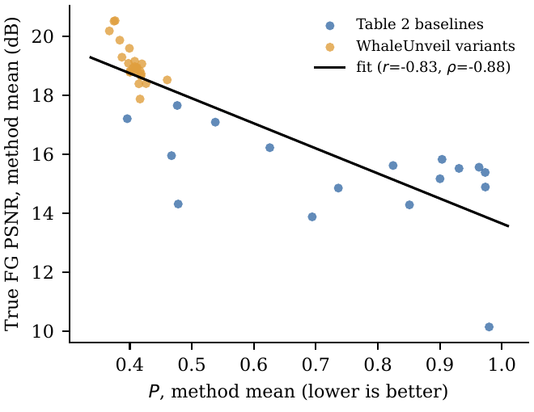

: Seeing Marine Life Beneath the Ocean Surface in Aerial Video
: Seeing Marine Life Beneath the Ocean Surface in Aerial Video
Aerial drones have transformed marine wildlife monitoring, yet waves, glare, foam, caustics, and depth attenuation obscure submerged animals. Removing these distortions is uniquely challenging, primarily because there is no natural way to collect real-world ground truth data in the wild, which renders supervised training impossible. We aim to spur research in this direction by introducing WhaleUnveil, which combines a physically based ocean simulator, a cross-domain aerial dataset and challenge, and a unified multimodal diffusion model that serves as a strong SOTA baseline for the challenge. Our real-time simulator renders diverse 3D marine life under realistic waves, glare, and water optics, exporting exact layer ground truth. Pairing these simulations with curated drone clips enables joint training across domains. Our model recovers clean scenes and water layers from real video without real ground truth and outperforms a variety of prior art on both real and simulated data.
60 FPS in WebGL2, deterministic on server GPUs. Three FFT wave cascades, a 3D MLS-MPM fluid solver (393K particles), 3D Snell caustics, Beer–Lambert water optics, Hošek–Wilkie sky reflections. Exports the clean scene and five water layers per frame, which recombine to the rendered frame within 0.5 RGB units.
Five-second 1080p simulated videos, 789 training and 88 held-out test species. Real clips are cut-free segments of 538 YouTube videos (7.5 hours), with test clips from source videos never used in training. Both domains share nuisance-decorrelated DINOv2 + AnyUp features.
Trained jointly on simulated and unlabeled real video with Diffusion Forcing and differentiable forward and backward walk losses. Full-frame PSNR 19.6 → 32.8 dB, animal PSNR 15.6 → 19.1 dB on unseen creatures, Preal 0.617 (raw input 0.784, lower is better).
Our baseline fine-tunes the Wan 2.1 video diffusion model to predict the clean scene together with every water layer, trained on simulated and real drone video with physical forward and backward walk losses. Below: held-out real clips and unseen simulated creatures at 480×864.








